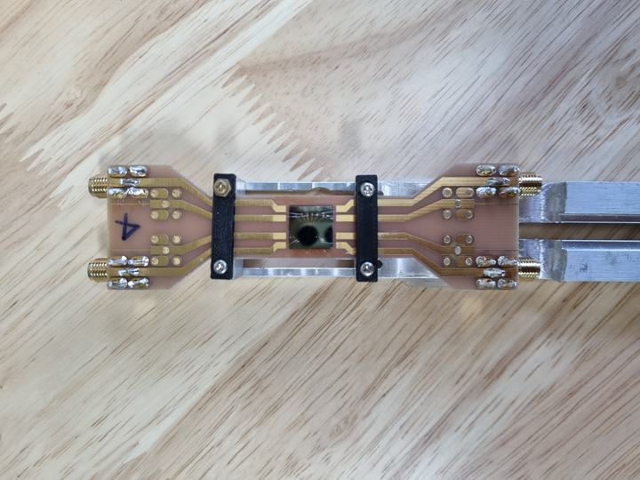

Microwave Magnonics Lab, Chungbuk National University
Hybrid magnonics at microwave frequencies
We couple spin waves (magnons) to phonons, microwave photons and superconducting circuits, and turn those couplings into devices for quantum transduction, quantum sensing and neuromorphic computing.
Led by Kyongmo An, formerly a Marie Skłodowska-Curie Fellow at EPFL, a postdoctoral researcher at SPINTEC and a Sejong Science Fellow at KRISS.
Live simulation: a microwave antenna (gold) launches spin waves along a magnetic waveguide, and damping makes them fade with distance. Move your pointer over the waves, tap, or use the arrow keys to move the antenna.
-
Physical Review X
Two distant magnets couple strongly through phonons, forming bright and dark collective states.
-
Nature Communications
Nonlinear magnonic waveguides develop coherent modes, resolved at ultrahigh frequency resolution.
-
Physical Review Letters
Light drives magnons and phonons out of local equilibrium in a magnetic insulator.
-
National funding to 2031
Quantum transduction (Glocal R&D), quantum sensing (ITRC) and a Sejong Science Fellowship.
Research
Magnons, the quanta of spin waves, carry information at gigahertz frequencies without moving electric charge. Their frequency tunes with a magnetic field, and they couple strongly to lattice vibrations (phonons) and to microwave photons.
M² Lab works where these three meet. We use phonons to couple distant magnets, connect magnons to superconducting circuits to convert quantum information between platforms, and exploit nonlinear spin-wave dynamics for signal processing and neuromorphic computing.

-
Magnon–phonon coupling
Magnons and phonons hybridize strongly in magnetic garnets. We use acoustic phonons to transfer angular momentum coherently between distant magnets and to engineer bright and dark collective states.
-

Quantum magnonics
Magnons couple to microwave photons and superconducting qubits, which makes them candidates for quantum transducers and sensors. Under our Open-Lab project we are building a cryogenic platform for magnon–superconductor quantum transduction, including the generation of squeezed magnon states.
-

Spin-wave signal processing and neuromorphic devices
Spin waves carry information without charge currents, and their nonlinear interactions can perform logic and mimic neural functions. We study nonlinear magnonic waveguides at ultrahigh frequency resolution and design antennas that control spin-wave nonreciprocity.
-

Spin caloritronics
Heat travels through magnetic insulators as both magnons and phonons. We measure how the two fall out of equilibrium and how thermal magnons diffuse, as groundwork for energy-efficient spin devices.
-

Van der Waals magnets New direction
Layered van der Waals ferromagnets such as Fe3GaTe2 keep their magnetic order and perpendicular anisotropy above room temperature, which makes them attractive for compact spin devices. We measure their magnetization dynamics with out-of-plane ferromagnetic resonance and study how electric currents change their magnetic properties.
Funded projects and roadmap
Three national programs support the lab, with commitments running to 2031. The roadmap shows how the projects build on each other.
-
Magnon–superconductor quantum transduction
Builds a regional Open-Lab for cryogenic quantum transduction between superconducting qubits and magnonic systems, including squeezed magnon states.
-
Magnon-based quantum sensing
Develops magnon-based device platforms for next-generation quantum sensing within CBNU's Information Technology Research Center.
-
Sejong Science Fellowship
Quantum-like magnon dynamics, spin–phonon interactions and low-dissipation information transport in engineered phononic structures.
Roadmap
-
Build
Microwave laboratory at CBNU with RF sources and analysers, lock-in detection and electromagnets; first spin-wave propagation experiments.
-
Couple
Cryogenic magnon–superconductor platform through the Open-Lab, squeezed magnon states and phonon-mediated coupling in planar devices.
-
Sense and compute
Magnon-based quantum sensors within the ITRC program and nonlinear spin-wave circuits for neuromorphic processing.
Facilities
A microwave and magneto-optical laboratory, built from an empty room at CBNU since September 2025.
- Microwave spectroscopy
- RF sources and analysers for in-plane and out-of-plane ferromagnetic resonance and spin-wave transmission.
- Lock-in detection
- Lock-in amplifiers for low-noise electrical detection of magnetization dynamics.
- Magneto-optical Kerr effect
- Laser-based MOKE setup on the optical table for optical detection of magnetization.
- Magnetic fields
- Electromagnets on bipolar power supplies, with an in-house Arduino-controlled rotation stage for angle-resolved measurements.
- 2D vector electromagnet In design
- Four-pole in-plane vector magnet for rotating fields without moving the sample.
- Spin-wave devices
- Custom microwave antennas, including 1 mm and 0.5 mm designs, for propagating spin waves in the Damon–Eshbach geometry.
- Simulation
- Micromagnetic simulations and electromagnetic field calculations for antenna and device design.
- Cryogenic platform Being built
- Magnon–superconductor experiments through the Chungcheong Open-Lab project.
From an empty room to experiments
The room before the instruments arrived. Instrument racks and measurement stations go in. Antenna for Damon–Eshbach spin-wave propagation. A Fe3GaTe2 sample on a coplanar-waveguide board. Building the MOKE setup on the optical table. In-house Arduino control of the rotation stage. Out-of-plane FMR on Fe3GaTe2. MOKE optics in operation.
Publications
30 peer-reviewed papers since 2011, 10 of them led by Kyongmo An as first or corresponding author, in journals including Physical Review Letters, Physical Review X and Nature Communications.
Selected publications
-
Physical Review X12, 011060 (2022)
Bright and dark states of two distant macrospins strongly coupled by phonons
Two distant magnets couple strongly through phonons, forming bright and dark collective states.
First and corresponding author -
Nature Communications15, 7302 (2024)
Emergent coherent modes in nonlinear magnonic waveguides detected at ultrahigh frequency resolution
Nonlinear magnonic waveguides develop coherent modes, resolved at ultrahigh frequency resolution.
Co-first author -
Physical Review B101, 060407(R) (2020)
Coherent long-range transfer of angular momentum between magnon Kittel modes by phonons
Phonons carry angular momentum coherently between two magnets over long distances.
First author Cited 200+ times -
Physical Review Letters117, 107202 (2016)
Magnons and phonons optically driven out of local equilibrium in a magnetic insulator
Light drives magnons and phonons out of local equilibrium in a magnetic insulator.
First author -
Physical Review Applied20, 014046 (2023)
Optimizing the magnon-phonon cooperativity in planar geometries
How to maximize magnon–phonon cooperativity in planar device geometries.
First author -
Physical Review Applied11, 034065 (2019)
Optimization of spin-wave propagation with enhanced group velocities by exchange-coupled ferrimagnet-ferromagnet bilayers
Exchange-coupled ferrimagnet–ferromagnet bilayers raise spin-wave group velocities.
First and corresponding author
All publications (31)
2026
-
Time-gating of coherent spin-wave echoes from edge reflections in micro-patterned YIG
Submitted (2026)
-
Chiral acoustic phonon and conservation of pseudoangular momentum in α-quartz
Adv. Mater. 38, e11289 (2026)
-
Optimizing spin-wave nonreciprocity via antenna-field design
J. Korean Phys. Soc. 88, 1094 (2026)
-
Dynamic X-ray magnetic circular dichroism of yttrium iron garnet
Current Applied Physics 81, 1 (2026)
2025
-
ACS Nano 19, 39747 (2025)
-
Giant modulation of magnetoresistance in a van der Waals magnet by in-plane current injection
Adv. Mater. 37, 2414917 (2025)
2024
-
Emergent coherent modes in nonlinear magnonic waveguides detected at ultrahigh frequency resolution
Nature Communications 15, 7302 (2024)
-
Programmable racetrack for magnetic domain wall motion via local tuning of exchange biased field
Adv. Electron. Mater. 10, 2400027 (2024)
2023
-
Optimizing the magnon-phonon cooperativity in planar geometries
Phys. Rev. Applied 20, 014046 (2023)
-
Nonlocal magnon transconductance in extended magnetic insulating films. I. Spin diode effect
Phys. Rev. B 108, 144410 (2023)
-
Nonlocal magnon transconductance in extended magnetic insulating films. II. Two-fluid behavior
Phys. Rev. B 108, 144411 (2023)
-
Dynamics of weak magnetic coupling by x-ray ferromagnetic resonance
J. Appl. Phys. 133, 173906 (2023)
2022
-
Bright and dark states of two distant macrospins strongly coupled by phonons
Phys. Rev. X 12, 011060 (2022)
-
Adv. Funct. Mater. 32, 2112561 (2022)
-
Nano Letters 22, 8430 (2022)
2021
-
Short-range thermal magnon diffusion in magnetic garnet
Phys. Rev. B 103, 174432 (2021)
-
Enhancement of YIG|Pt spin conductance by local Joule annealing
Appl. Phys. Lett. 118, 032404 (2021)
2020
-
Coherent long-range transfer of angular momentum between magnon Kittel modes by phonons
Phys. Rev. B 101, 060407(R) (2020) cited 200+ times
-
Pure spin current and magnon chemical potential in a nonequilibrium magnetic insulator
Phys. Rev. X 10, 021029 (2020)
-
Dimensional crossover in spin Hall oscillators
Phys. Rev. B 102, 054422 (2020)
2019
-
Phys. Rev. Applied 11, 034065 (2019)
2018
-
Magnon and phonon thermometry with inelastic light scattering
J. Phys. D: Appl. Phys. 51, 133001 (2018) Topical Review
2017
-
Phys. Rev. B 96, 024448 (2017)
2016
-
Magnons and phonons optically driven out of local equilibrium in a magnetic insulator
Phys. Rev. Lett. 117, 107202 (2016)
-
Phys. Rev. B 94, 180408(R) (2016)
-
Current control of magnetic anisotropy via stress in a ferromagnetic metal waveguide
Phys. Rev. B 93, 140404(R) (2016) Editors' Suggestion
2015
-
Temperature dependence of Brillouin light scattering spectra of acoustic phonons in silicon
Appl. Phys. Lett. 106, 051906 (2015)
2014
-
Control of propagating spin waves via spin transfer torque in a metallic bilayer waveguide
Phys. Rev. B 89, 140405(R) (2014) Editors' Suggestion
2013
-
Appl. Phys. Lett. 102, 082401 (2013)
2012
-
Deviation from exponential decay for spin waves excited with a coplanar waveguide antenna
Appl. Phys. Lett. 101, 252409 (2012)
2011
-
Spin state of MnO investigated by ⁵⁵Mn nuclear magnetic resonance
Phys. Rev. B 84, 174423 (2011)
People

Kyongmo An안경모
Principal investigator. Assistant Professor, Department of Physics Education, Chungbuk National University
Kyongmo An founded M² Lab in March 2025. His work connects spin waves with sound and microwave photons: Brillouin light scattering of magnons and phonons during his Ph.D. at UT Austin, spin-wave devices as a Marie Skłodowska-Curie Fellow at EPFL, phonon-mediated coupling of magnets at SPINTEC in Grenoble, and hybrid magnonics as a Sejong Science Fellow at KRISS.
- 2025–Assistant Professor, Chungbuk National University
- 2021–2024Sejong Science Fellow, Korea Research Institute of Standards and Science (KRISS)
- 2019–2021Postdoctoral researcher, SPINTEC, Grenoble
- 2017–2019Marie Skłodowska-Curie Fellow, EPFL, Lausanne
- 2016Ph.D. in Physics, The University of Texas at Austin
- 2010M.S. in Physics, KAIST
- 2008B.S. in Physics, Yonsei University
Students and researchers
-

Taekyeoung An
M.S. researcher
Micromagnetic simulation
B.S., Kangwon National University
tk4214@naver.com -

Chanwoo Shin
Undergraduate researcher
Physics education and magnonics
B.S. student, CBNU
chanwoo204@gmail.com
Each summer we also host undergraduate interns. The 2026 interns worked with us from June to August, and the team finished the program together at the KPS Fall Meeting in Jeju.
News
-
Undergraduate research at the KPS Fall Meeting, Jeju
Our summer interns presented their own project, diffraction from a macroscopic artificial crystal measured with microwave scattering, in the undergraduate physics research competition of the Korean Physical Society Fall Meeting. The whole lab travelled to Jeju to close the season together.
-
Ryuhei Kohno visits from Tohoku University
Ryuhei Kohno, assistant professor at Tohoku University and co-author on seven of our papers, visited M² Lab.
-
Summer internship wraps up
Over three months, from June to August, our interns joined Friday seminars, built microwave experiments in the lab and visited the Korea Research Institute of Standards and Science (KRISS).
-
Magnetism Summer School at CBNU
Kyongmo An organized the 2026 Magnetism Summer School (자성학 여름학교), held at Chungbuk National University.
-
Lab setup complete, experiments under way
Key microwave equipment and electromagnets are installed: RF sources and analysers, lock-in measurement systems, an electromagnet, sample stages and an optical table area. Measurements are in progress.
-
2026 summer internship program begins
For three months, undergraduates join hands-on research on microwave magnonics, spin-wave devices and quantum interfaces.
-
First APS presentation for Taekyeoung An
Taekyeoung presented his poster at the APS Global Physics Summit in Denver.
-
First paper led by M² Lab
Yunyoung Hwang, Taekyeoung An and Kyongmo An show how antenna-field design tunes spin-wave nonreciprocity, in the Journal of the Korean Physical Society.
-
Chiral phonons in α-quartz
With collaborators at KRISS, we report chiral acoustic phonons and conservation of pseudoangular momentum in Advanced Materials.
-
New project: magnon–superconductor quantum transduction
Three-year funding (2025–2028) awarded for "Magnon-Superconductor Quantum-Transduction Devices based on Chungcheong Open-Lab Foundation".
-
M² Lab opens at CBNU
The Microwave Magnonics Lab begins operation in the Department of Physics Education at Chungbuk National University.
Conferences and lab life
Scroll sideways for more photos. Select a photo to enlarge it.
-
The lab together in Jeju, KPS Fall Meeting
-
Jeju black-pork dinner with the whole team
-
The interns' microwave diffraction setup
-
Friday seminar: a student explains ferromagnetic resonance
-
A huge crystal at the Denver Museum of Nature and Science
-
Magnonics 2025 boat excursion
-
SolSkyMag conference
-
Li Lab homecoming dinner at APS
-
Trends in Magnetism, Venice
-
Spin Mechanics 7 excursion to Rothenburg
Teaching
Courses in the Department of Physics Education, where we train future physics teachers.
- Spring 2026
- Electromagnetism and EM Education I
- Mathematical Physics I
- Thermal and Statistical Physics
- Physics Experiment I
- Fall 2025
- Electromagnetism and EM Education II
- Mathematical Physics II
- Physics Experiment II
- Solid State Physics Education
- Spring 2025
- Electromagnetism and EM Education I
- Mathematical Physics I
- Thermal and Statistical Physics
Join M² Lab
We welcome students who are curious about spin waves, microwave measurements and hybrid quantum systems. Research experience is not required; curiosity and persistence are.
Email kman@cbnu.ac.kr
Office E1-1-313, Department of Physics Education, Chungbuk National University, Cheongju, Republic of Korea
- Graduate students (M.S. and Ph.D.)
- Build microwave experiments, run simulations and design spin-wave devices.
- Undergraduate interns
- Summer and semester internships. First- and second-year students are welcome; our 2026 interns presented their own project at the KPS Fall Meeting.
- Postdoctoral researchers
- Get in touch to discuss openings and fellowship applications.